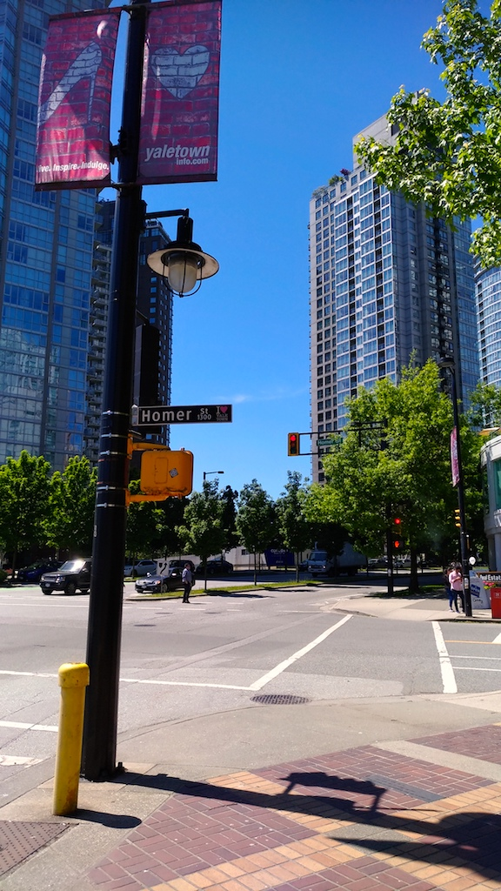
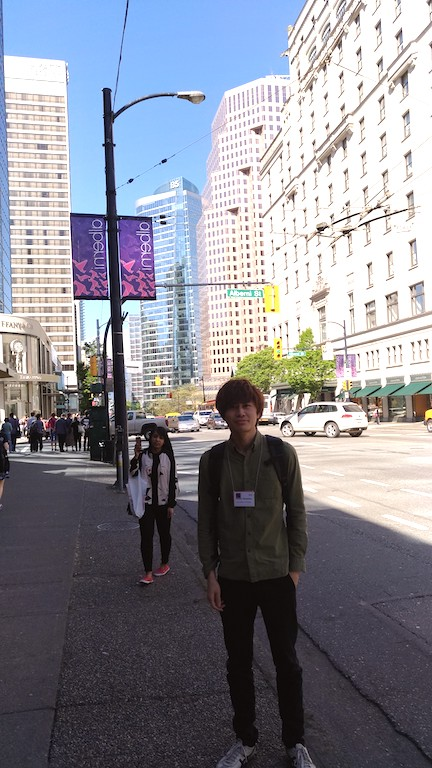
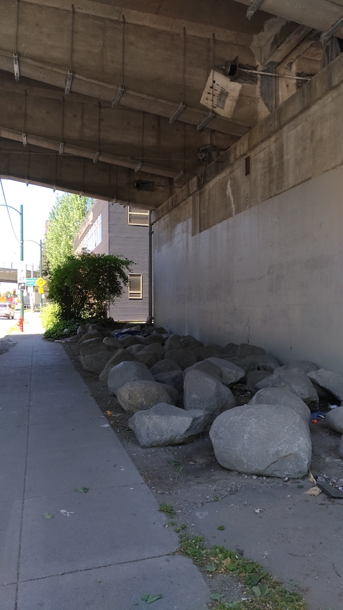
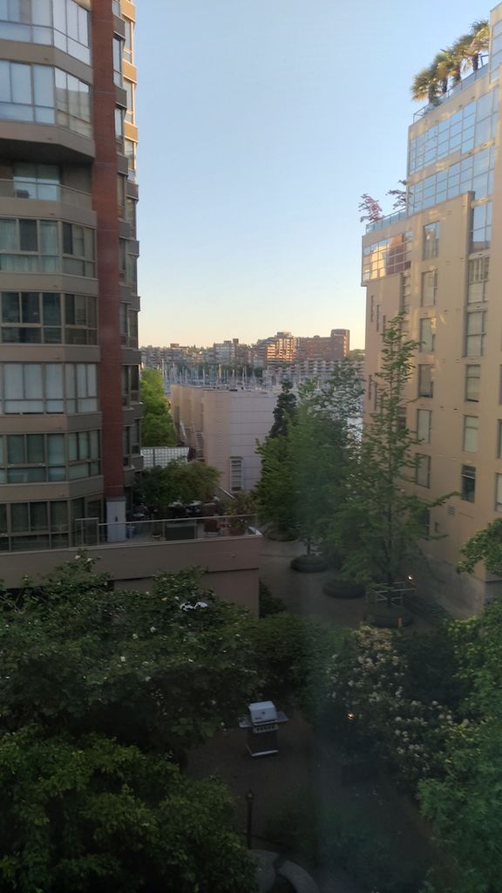

2017年5月
5月31日
提出物を出しに２週間ぶりくらいに大学へいった． しかし，その提出物が入ったファイルを忘れるという，ありえないミスをおかした． これが企業とかだったら，実際かなりやばいよね．．気持ちを引き締めねば．
今日は，研究に若干の進展があった． 昔提案されたアルゴリズムのアイディアを使えば，今まで（個人的に）悩まされていた課題を解決できるかもしれない，と気づいた． とりあえず，明日考えてみよう．
大学帰りにソラマチのスタバで嘘喰いの新刊を読んで帰宅． 今日はかなり空いていた．
ソラマチからの帰りに最近読んでるジャンプの新連載Dr.STONEを読む． この漫画には個人的にはけっこう期待してる．原作はアイシールド21の人で，作画はサンケンロックとかのBoichiと，けっこう豪華． 内容はこの二人の趣味をマッチさせたもので，主要登場人物はアイシールド21の登場人物に似てるし，設定はBoichiのHotelと若干似てる． ハンターハンターも連載再開するし，今年はジャンプ盛り上がってきてる．
5月29日
一日家にいた． 久しぶりに研究したところ，若干の進捗があった． また，（個人的には）けっこうおもしろい論文を見つけた．
夜に，プロフェッショナルで世界ネコ歩きの岩合さんが特集されていた． 猫を通して世界平和を目指しているらしいが，彼はプロフェッショナルだった．． 世界ネコ歩きがあんなストイックに撮影されているとは．
5月28日
いろいろとやるべきことが終わったため，ゆっくり過ごせた．
夜にソラマチへ行ったらどこもありえないくらい混雑していて，結局 マクドナルドに入った． 飲食店はだいたい安いところから行列ができるから，そこそこ高い ひつまぶしに行列ができていたのはけっこうレアケースだと思う．
その後，友人らにバンクーバーのお土産を渡した． THEカナダなTシャツの色違いを買ったが気に入ってくれてよかった．
5月21日〜5月26 (SIAM@Vancouver)
初の国際学会に参加したのでまとめて日記で書きます．
初の国際学会と書いたけれど，実はアメリカ大陸へ初上陸である． さらにいうと，今まで海外は中学時代の卓球合宿での中国と学部時代に旅行で行った台湾しか行ったことがなかったので，自分にとっては結構なビッグイベントであった．
SIAMの感想
今回は海外の人の発表を初めて聞くという経験であったため，（当たり前なのかもしれないが）わりと熱心に学会発表を聞いた． （ICCOPTは全日程オリンピックセンターでバイトしていたため，発表は聞いていなかった．）
発表内容はなんとなく理解できるものがあったり，全くわからないものがあったりと日本での学会と感じ方は変わらなかった． その話を水野先生としたら，「発表は伝える気があるかが大事で，言語よりもそっちのほうが重要な要素」というようなことを言っていた． たしかに，ここに来る前は「英語だし，聞き取れるかな．．．」的なことを思っていたが，実際そっちよりも発表のストーリーがしっかりしているか どうかのほうが，理解度に大きく影響していた気がする． 英語はもちろん大事だけれど，研究発表においては研究のストーリーをうまく説明する力のほうがよっぽど大事と思った．
自分の発表は小さな部屋で聴衆はかなり少なかった．そもそも，SIAM自体連続最適化の会議らしく，ちょっと研究内容と会議のミスマッチングだったと思われる． 発表はわりとうまくいき，質疑応答もそれなりにまともな返答ができた気がする． 学部時代無駄だと思ってたTOEICの勉強のおかげか，今回の旅行で英語は8割-9割聞き取れた気がする．あれは意外と無駄ではなかったのかもしれない．
そういえば，自分のセッションの前に，同じセッションのインド人の学生が握手と共に話しかけてくれた． 簡単な挨拶や自己紹介をしただけだが，おかげで自分の緊張がかなりほどけた．まさにアイスブレイク． 彼はそういう意図ではないだろうけれど，ありがたかった．今後，同じ場目に遭遇したら，握手と共に「I am Yotaro」でいこう． ちなみに彼の発表は全く理解できなかった．
食事
カナダ固有の食事は何なのか？いろいろな店で食べたけれど，どれもけっこう美味しかった． まず，文化として驚いたのが，いちいち店員が「どう？美味しい？」とか「楽しんでる？」的なことを聞きに来ることだ． 大日本人として，これはかなりの難関だった．
あとは日本料理店がかなり多かった．テレビでの「日本料理は世界で人気😂！！！」は正直嘘かと思っていたため，けっこうな驚きだった．
ホームレス
ホームレスを街でちらほら見かけた． バンクーバーのホームレスは積極的に「物乞い」として市民に関わりを持とうとしている印象を受けた． 一方で，日本のホームレスはどこかに集まり（河川敷，高速道路の下，公園など），そこでひっそりと暮らしている． 日本では表参道でホームレスを見たことがないけれど，バンクーバーの高級ブランド店がたくさんあるとおりに物乞いもいて，だいぶ違うなーと思った． この差はなんなのか．
外面
半袖・マッチョ・上裸が多かった．
写真
町並み

コンテナターミナル

自分の写真

排除アート（？）

ホテル🏨からの景色（夜９時頃でも明るい）

5月17日
来週に初の国際学会を控えており，その準備に追われる． いろいろ，やることが増えてしまったせいで学会の準備がかなり遅れてしまった． 今のところ不安ではあるが，せっかく頂いた機会なので頑張りたいと思う．
5月14日
つくばの二日目． 土谷先生の話がとてもおもしろかった．次の二点のアドバイス(?)が特に印象に残った．
- 長期的な問題意識を持って研究すること．
現状，ちいさな問題をこまごまと解決していて，自分には長期的な問題意識が弱い気がしている．
- 周りの人は大事．
これは学生の自分でさえ感じているということは，先生方はもっと深いところでいろいろ感じているのだろう． 昔は研究者というと孤高の人みたいイメージがあったは最近はむしろ逆に感じる．
帰りに，お世話になっている先生からメールでいろいろアドバイスを頂いた． かなり具体的な指針をくださり，とてもありがたかった．
5月13日
今日ははじめて筑波の研究集会に参加した．
今まで存在は知っていたけれど，参加したことはなかった． そもそも発表するような研究成果もなかった．
今回発表者は多いようで，発表の持ち時間は１人10分とかなり短かった． 反省として，自分の発表は次のような点で良くなかった．一応メモしておく． （いつもいろいろとアドバイスをくださる先生方にはとても感謝しています．）
- 近似アルゴリズムとは？とか中途半端に基礎的な話をいれた．
- 提案アルゴリズムのテクニカルな部分での貢献をうまく主張できなかった．
他の発表者(B4,M1,M2にもかかわらず！)は発表・研究の両クオリティが高く驚いた． やっぱり，研究のコアとなるところの強調がうまかった． 是非参考にさせてもらいたい．
あと初めての座長を担当した．こちらも多くの改善点が残ってしまった．
特別講演の池上先生は，ナーススケジューリングの話や自身の研究人生の話を語ってくださり，とてもおもしろかった． 特に，後半の学会発表から論文執筆したときの話はちょっぴり感動した．
懇親会はいろいろな大学の人と交流できてとても良い機会だった．
とりあえず去年から参加していれば！と思える一日でした．
5月10日
今日は天気が悪かったため，一日家で過ごした． ラジオを聴いていたら，最近店で耳にしていいなと思っていた曲の名前がわかってもやもやが解消された． 言われてみればColdplayの曲で歌詞もわりと良かった．
明日は，ひょんなことから夜にスロバキア人とその友達のパーティーに参加することになってしまった． 何の研究をしているのと言われて応用数学と答えたら，「I hate math」と言われた． この人以外にも，フィリピン英会話でもだいたい同じことを言われたきがする．
ある科目を苦手と感じることはあっても，(ニュアンスはわからないけれど)Hateまで至ったことはないな． 極度の苦手に達すると，Hateに到達するのかな？
5月9日
午前中にキャリア科目の課題を仕上げる． なんとかやりきったが，課題の意味を理解することができなかった．．
「自身のキャリアプランを例えば役員会審議にかけてアクションプランとして承認させる」想定で，一枚のみの資料を作成する．A3横一枚で作成する．
一体どういうことなのか😢 そもそも，キャリアプラン，アクションプラン，役員会審議という未知語が多すぎて理解できなかった． 大学受験時に，英語の先生が一文あたり知らない単語が３つあると英文理解はかなり難しいという話をしていたことを思い出した．
ビーガンに影響されて，夕飯は大豆の肉を使ったガパオライスを食べた． 味が濃いのは，大豆感をなくすためなのか．．
5月8日
今日は何ヶ月かに一回訪れる全くやる気がでない日だった． 今までこの日について特になにも考えたことはなかったけれど，よくよく考えてみたらこの日の原因は一体何なのか．． 現在おそらくストレスはほとんどなく，精神的なものではない気がする．となると，前の日の生活や日々の疲れの蓄積から訪れるのか． おそらくこれかな．
結局やる気がでないまま，今日は家でストレッチしたり，課題をやったりして過ごした．
気分転換に漫画を読むことにして，Kindleで無料だった神様の言うとおりという漫画を3巻読んでみたが，ひどい漫画だった． 一方で，現在２巻まで出ているこちらの漫画は結構楽しめた．
5月7日
亀戸に行ったら，駅前では山谷の労働者たちがカンパのお願いをしていた． 駅前での活動でははじめてみた．
帰りに亀戸天神のふじまつりをちら見したら，もう散っているにもかかわらずかなり混んでいた． 例年見に行っている気はするけど，満開の時期に見に行けた例がない．．
夜は家で集まって亀田興毅の試合をプロジェクターで見た． Abema TVでやっていたけれど最終的に1300万人が視聴していたらしい． 視聴率換算すると30%くらいあるっぽい．やはり亀田興毅はすごい．
5月5日
世界カフェへいったが，珍しく混んでいて諦め，錦糸町へいった．
錦糸町南口のホームレスの方がたまにいるエリアがおしゃれなベンチになっていた． ベンチの形は直線ではなく，横にはなれないような仕組みになっていた．
本来は、人々の心や生活を豊かにするためのアートを、特定の人を排除するために使うなどいやらしいやり方だと思う
気づかない人は気づかないけれど，ここ10年間での墨田区・台東区あたりの排除アートはすごい． 実際に，隅田公園とかのホームレスはここ数年で激減したと思う．さらに，きれいになったとは思う．ただ，いなくなった彼らは一体どこへいったのだろう？
学振書類は８割書き終えた．きちんと書けているのかっていうのは自分ではわかり得ないような気がする．
あと，応募に関する残りのタスクとして評価書というものを書く必要（本当は書いてもらう必要）がある． 実はこの評価書というものを書く必要をつい最近知った． まず，申請システムをおさらいするのが大事だね😢
5月3日
今日は学部時代の部活の同期と飲み会で横浜にいく．
行く前に，コーヒーにMCTオイルを入れすぎ，電車で腹痛に悩まされ，地獄だった．
飲んだ後に，「バニッシュ（コスモワールドのジェットコースター）乗るか！」となり， コスモワールドへいった．わりと混んでいて30分ほどの列になっていた．
やっと乗れると思いきや，なんと乗る直前にアルコールを摂取していないかの呼気のチェックがあった😂 これにはしっかりと引っかかり，乗れずに退散😢
けっこう前（4時間）に飲んでていてもしっかり反応してて， 機器の性能の良さを知れた．これは飲酒運転は絶対バレるね． まあ，自分はそもそも免許持ってないけれど．．
5月2日
断続的ファスティング（軽い断食）をしつつ，大学へ行ったが，強い疲労感を感じ，1時間で帰宅． やはり朝に完全無欠コーヒーのみだと，午後から燃料切れになると気づいた． 家をでる前に，もう一杯飲む or 完全無欠フードを食べなければ．
平日とはいえゴールドウィーク中だったが，研究室にはほとんど全員学生がいた． 研究熱心(?)でいいと思う． 実際研究室に来れば何かはするし，人と話して気晴らしになるから適度に来たほうがいい気がする． 自分は家が少し遠く家でやる派だけれども．．
5月1日
一日家にいた．完全無欠コーヒーのおかげか一日中特に怠けずに生活できた．